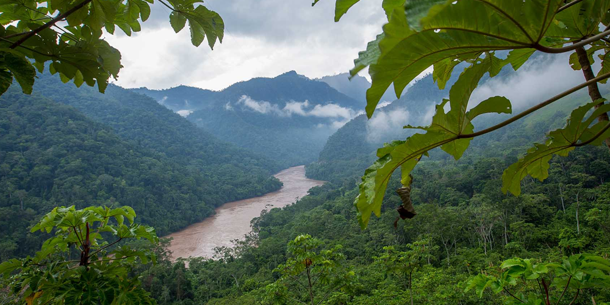
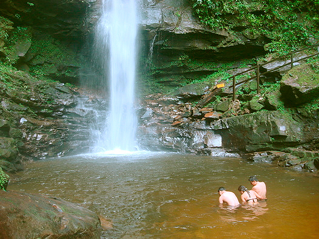
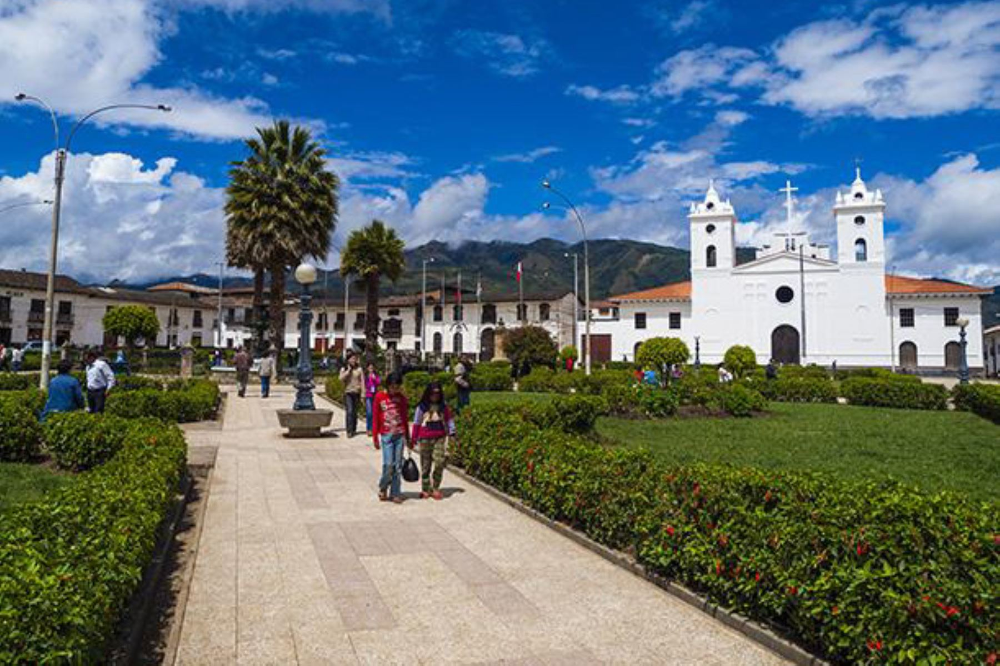
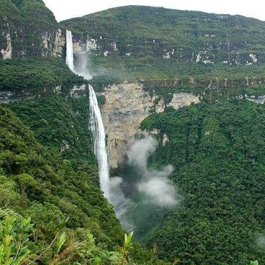

Tarapoto
Tarapoto es una ciudad peruana de la región de San Martín, que se caracteriza por el bosque nuboso amazónico y sus abundantes palmeras. Es conocida por las numerosas cascadas en las selvas circundantes, incluidas Ahuashiyacu, Huacamaíllo y Shapaja. Al sureste de la ciudad, las aguas claras del lago Lindo y la laguna Sauce más grande (también llamada Laguna Azul) están rodeadas de densos bosques verdes con abundantes especies de aves.
Ahuashiyacu
La catarata de Ahuashiyacu es una serie de 3 caídas de agua situada en el distrito amazónico del departamento de San Martín, Perú. Se encuentra a una distancia de 14 kilómetros desde el centro de la ciudad más próxima, Tarapoto y se accede a ella en automóvil a través de la carretera Fernando Belaunde Terry en dirección a Yurimaguas. La catarata está ubicada dentro del Área de Conservación Regional Cordillera Escalera y debe su importancia a ser un conocido reclamo turístico y la cascada de mayor altura de toda la región de San Martín.
Amazonas
Amazonas es una región hacia el norte de Perú en la frontera con Ecuador. Es conocida por sus densos bosques nubosos, la escarpada cordillera de los Andes y unas ruinas antiguas. El sitio arqueológico más destacado es Kuélap, un asentamiento preincaico que tiene cientos de construcciones y una gran muralla perimetral. Hacia el sur se encuentra Chachapoyas, la capital de la región, la que presenta techos de tejas rojas.
Catarata de Gocta
La catarata Gocta, conocida localmente como La Chorrera, es un salto de agua que se encuentra en las cercanías de los caseríos peruanos de San Pablo, Cocachimba y La Coca, distrito de Valera, provincia de Bongará, departamento de Amazonas en el noreste del Perú. Los vecinos del lugar siempre han conocido a esta cascada como Gocta. "Chorrera" es la palabra que emplean los pobladores de San Pablo para decir ‘catarata’. En ese mismo valle hay aproximadamente 22 cataratas (chorreras).